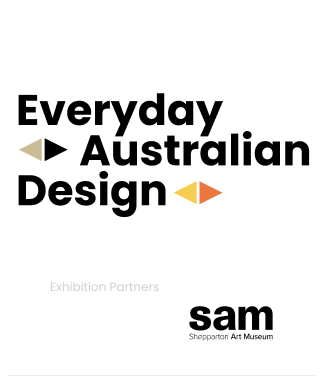
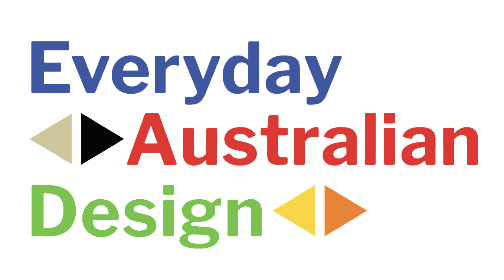
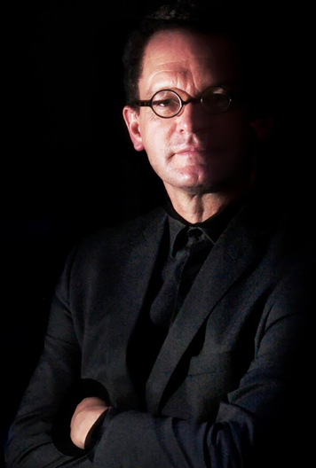

STACK HOT
1980
Client: Rosebank
Designer: Bryon Fitzpatrick, PA Technology
The Stackhat is a classic Aussie product celebrated for it’s connection to being forced as a kid to wear a bike helmet. Designed to meet strict bicycle safety standards, the concept was for a multi-use design for cricket, horse riding and bicycling. Designer Bryon Fitzpatrick was influenced by the work of visual futurist Syd Mead on the film Tron. Bryon Fitzpatrick is a Hall of Fame member of the Design Institute of Australia."

EVERYDAY Australian Design is an exhibition of objects from the Ian Wong Collection that celebrate Australian daily life and our culture.
Many of these familiar objects, from the 1880s to the present day, have become icons of a particular time. They provide insights into our everyday lives — the glasses we drink from, pans for cooking, the electric toasters and kettles in the kitchen or the iconic esky full of ice for a picnic — these are items we use at home and while at leisure with our family and friends.
This colourful display provides a story or two for all by prompting nostalgic memories or casting light on a familiar object’s trajectory through the world of design. Objects with a connection to Shepparton’s history, industry, culture and unique lifestyle also feature in the exhibition. The repetition of common objects across the colour block shelves provides insight into changes in materials, methods of manufacture, cultural influences like fashion trends or lifestyle changes, that all influence the design of everyday objects over time.
Many of these familiar objects, from the 1880s to the present day, have become icons of a particular time. They provide insights into our everyday lives — the glasses we drink from, pans for cooking, the electric toasters and kettles in the kitchen or the iconic esky full of ice for a picnic — these are items we use at home and while at leisure with our family and friends.
This colourful display provides a story or two for all by prompting nostalgic memories or casting light on a familiar object’s trajectory through the world of design. Objects with a connection to Shepparton’s history, industry, culture and unique lifestyle also feature in the exhibition. The repetition of common objects across the colour block shelves provides insight into changes in materials, methods of manufacture, cultural influences like fashion trends or lifestyle changes, that all influence the design of everyday objects over time.
Designer
Richard Allen, Abi Alice, Gordon Andrews, Mark Armstrong, David Atkins, Jeffrey Arnott
Peter Bayly, Kate Bissett Johnson, Steven Blaess, Fred Blochlinger, Don Brown, Warwick Brown, Visjna Brdar, Richard Carlson, Ken Cato, Paul Charlwood, Libby Christmas, Simon Christopher, Celina Clark, Paul Cockburn, Joyce Coffey, Selwyn Coffey, Paul Cohen, Su San Cohn, Adam Cornish, Bill Corker, Barry Crone, Stuart Crumpler , Hugo Davidson, Brain Davis, John Denton, Stuart Devlin, Anita Dineen, Wayne Draper, Ian Edgar, Garry Emery, Peter Farrer, Grant Featherston, Mary Featherston, Brian Fitzpatrick, David Flynn, Robert Foster, Charles Furey, Ross Gardam, Walter Gheradin, Adam Goodrum, Jim Hannon Tan, Edward Healy, Doris Herman, Richard Henderson, Dean Holmes, Allan Hooworth, Barry Hudson, Bill Iggulden, Vladimir Jacube, Mark Johnson, Edward Kayser, Helen Kontouris, Adrian Knapp, Ben Landau, Denise Larcombe, Viktor Legin, Edward Linacre, Jack Magree, Barry Marshall, Steven Martinuzzo, Mario Martkovich, Mal McKechnie, Clement Meadmore, William Moody, Jenny Morgan, Robert Morrison, Gerard Mussett, Carl Nielsen, John Nielsen, Marc Newson, Charles Ng, Louise Olsen, Stephen Ormandy, Marc Pascal, Robert Pataki, Chris Peters, Nick Rennie, Arthur Robinson, Max Robinson, Andrew Rogers, Ron Rosenfeldt, Peter Russell-Clarke, Brian Sadgrove, Jim Samartgis, Paul Schremmer, Jon Seddon, George Shepherd, Michael Simcoe, Phillip Slattery, Henri Spaile, Alex Stitt, Lionel Suttie, Paul Taylor, Wallace Tench, Bruce Thompson, Alfons van Maanen, Lisa Vincitorio, Andrew Whittaker, Lorrin Windahl , Anthony Wolfenden, David Wood, Derek Yuen, Phillip Zmood

Ian Wong (b. 1963, Shepparton; lives and works Naarm/Melbourne) was educated at St Georges Road Primary School and Shepparton Technical College. The Wong family’s connection to Shepparton began in 1878 when Chan Ah Wong began a market garden on the banks of the Goulbourn River in Mooroopna. Ian Wong is an Industrial Designer with over 35 years of professional experience and a Fellow of the Design Institute of Australia. An award winning academic researcher, Wong is Program Director, Master of Industrial Design at Monash University in China; and Director of the Monash Art Design and Architecture Industrial Design Centre (Kunshan).
The Ian Wong Collection has over 2000 objects and is stored locally in Shepparton. The collection has a curatorial focus on Australian industrial design, and the objects provide insights into the careers of many of Australia’s most significant and awarded designers.
The Ian Wong Collection has over 2000 objects and is stored locally in Shepparton. The collection has a curatorial focus on Australian industrial design, and the objects provide insights into the careers of many of Australia’s most significant and awarded designers.
Guest Curator
Ian Wong
Exhibition design
Ian Wong and Jo Pritchard
Digital Production (Web App)
Indae Hwang
Ian Wong
Exhibition design
Ian Wong and Jo Pritchard
Digital Production (Web App)
Indae Hwang